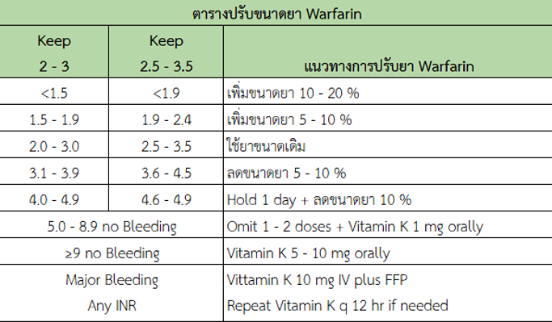

อ้างอิง
1.university of Wisconsin – UW Health. Warfarin Management-Adult-Inpatient Clinical Practice 2011.
2.สมาคมแพทย์โรคหัวใจแห่งประเทศไทย ในพระบรมราชูปถัมภ์.แนวทางการรักษาผู้ป่วยด้วยยาต้านการแข็งตัวของเลือดชนิดรับประทาน 2553.
3.สุภารัตน์ วัฒนสมบัติ (โรงพยาบาลเชียงรายประชานุเคราะห์) common pitfall in warfarin management. 2560.
1.university of Wisconsin – UW Health. Warfarin Management-Adult-Inpatient Clinical Practice 2011.
2.สมาคมแพทย์โรคหัวใจแห่งประเทศไทย ในพระบรมราชูปถัมภ์.แนวทางการรักษาผู้ป่วยด้วยยาต้านการแข็งตัวของเลือดชนิดรับประทาน 2553.
3.สุภารัตน์ วัฒนสมบัติ (โรงพยาบาลเชียงรายประชานุเคราะห์) common pitfall in warfarin management. 2560.
คำนวณขนาดยา Warfarin
mg/week
mg/week
ความเปลี่ยนแปลงจริง
(%)
(%)
0.00%
ขนาดยาที่เปลี่ยนแปลง
(mg/week)
(mg/week)
0.00 mg/week
Regimen ที่แนะนำ
เลือกขนาดยาที่มีในโรงพยาบาล
| จันทร์ | อังคาร | พุธ | พฤหัส | ศุกร์ | เสาร์ | อาทิตย์ | |
|---|---|---|---|---|---|---|---|
| รูปเม็ดยา | |||||||
| ขนาดยาต่อวัน |
เครื่องมือคำนวณวันนัด
* เลือกวันที่คุณต้องการใช้เป็นจุดเริ่มต้นการคำนวณ
* วันนัดที่ระบุจะแทนที่การระบุจำนวนวัน
กำลังคำนวณสรุปเม็ดยา...